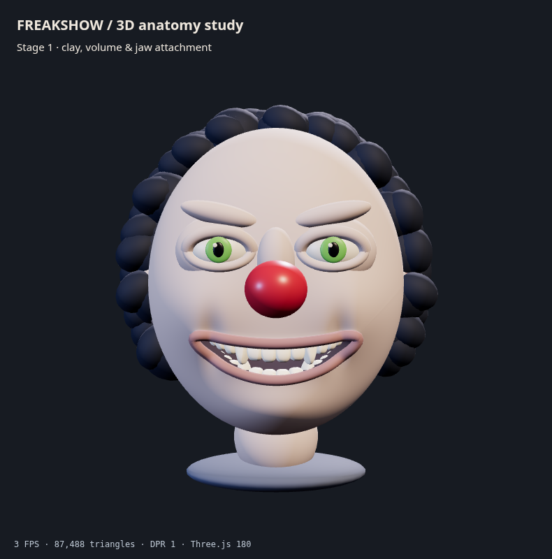
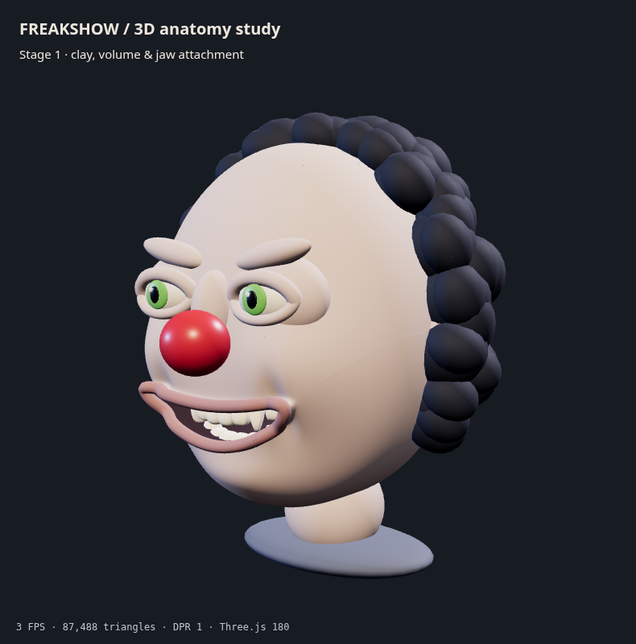
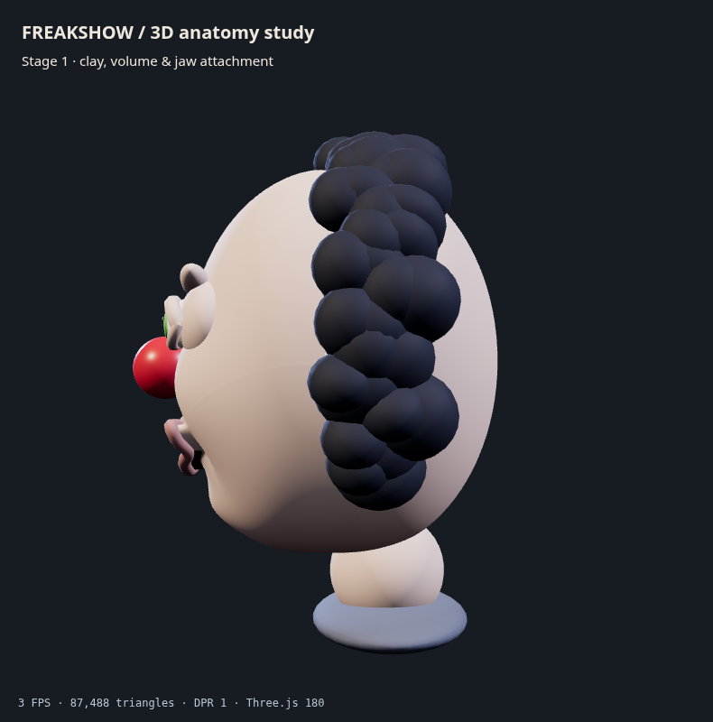
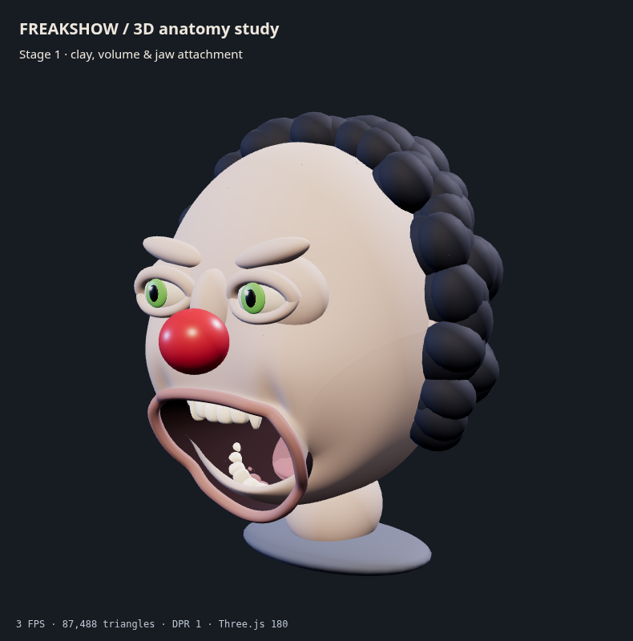
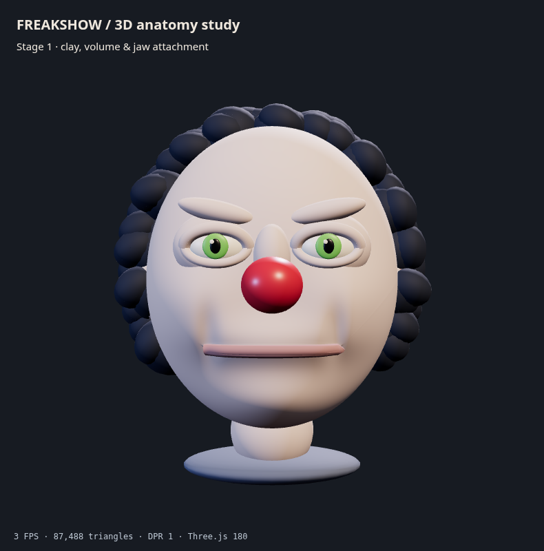
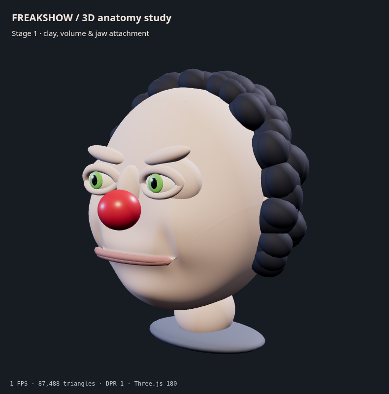
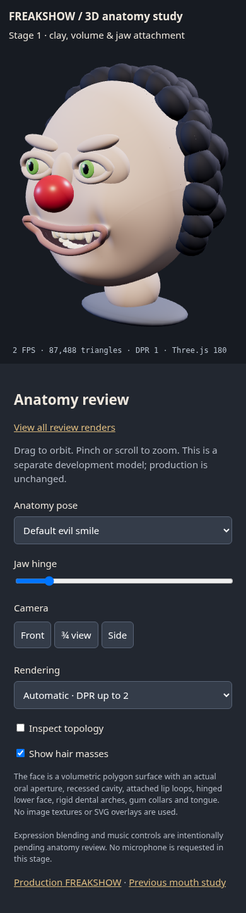
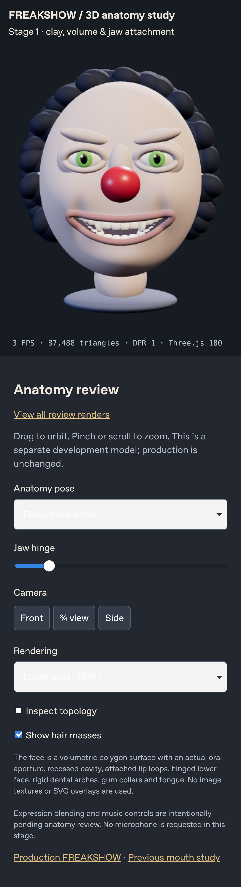

This is a procedural clay blockout for visual review, not an anatomically approved model. Production remains unchanged. Facial expression morph targets and music responsiveness are pending the anatomy and expression review gates.







